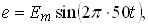
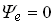
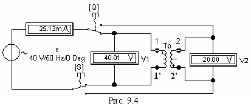

Задание 1. Экспериментально определить индуктивности обмоток идеального воздушного трансформатора, имеющегося в библиотеках пассивных элементов программы EWB или программы MS8 Education, их взаимную индуктивность и коэффициент связи катушек. С этой целью
- щелкнуть мышью на пиктограмме воздушного трансформатора и в появившемся окне Model выбрать модель Ideal;
- собрать схему (см. рис. 9.4) на рабочем поле программы EWB или на рабочем поле программы MS8 Education (либо открыть файл Lr9-1.ewb при выполнении работы в среде EWB или файл Lr9-1.ms8 при выполнении работы в среде MS8SD);
- установить значение ЭДС источника синусоидального напряжения  где Еm = int(35/N) + 5, В; f = 50 Гц; ,
где N - номер записи фамилии студента в учебном журнале группы;
- установить внутренние сопротивления 1 МОм вольтметров V1 и V2, работающих в режиме АС, а амперметра (режим АС) - 1 мОм;
- подключить (посредством ключей Q и S) вначале к зажимам 1 - 1' (к первичной обмотке) трансформатора, а затем к зажимам 2 - 2' (к вторичной обмотке) источник е (рис. 9.4); снять показания приборов и занести их в табл. 9.1. Определить параметры обмоток L1 и L2 и взаимную индуктивность М;
- вычислить коэффициент связи kM двух катушек.

Таблица 9.1.
| Номер катушки | Измерено | Рассчитано | |||||
| I, мА | U1, В | U2, В | XL, Ом | L, Гн | XМ, Ом | М, Гн | |
| 1 | |||||||
| 2 | |||||||